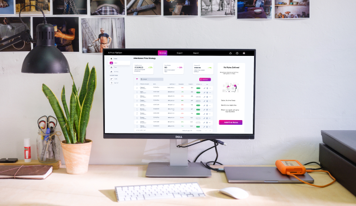

Project Overview
The Price prediction platform is an AI SaaS solution that boosts revenue by optimizing the service or product price based on demand and supply. The app is backed by data science and AI which is perfect for Sports, Cinema, Live-entertainment, Parking, Attractions, and Ski Resorts.
